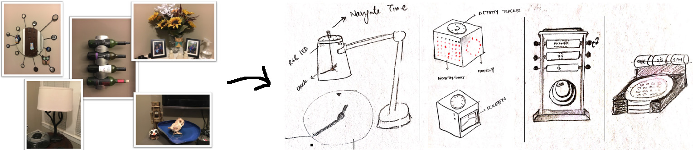
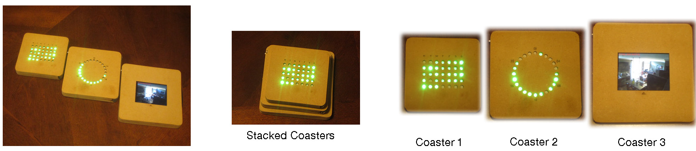

CHALLENGE
Imagine the question of:
"Imagine your household data is embedded in an everyday object in the home - what would be the nature of data, the kind of representation used, who should be able to see it, and how would it affect the family members in their everyday routines?"
Designing a visualization for a family in the context of a home is challenging. In contrast with the typical expert task-centric, focused approach to information visualization, this requires considering visualization methods that would be meaningful and contextually appropriate for family members.
Data: In this case, we will be using family's video recording of their home collected over a period of 2 years with metadata like activity level and the number of people in each frame.
Research questions addressed:
RQ1: How could Time-Turner fit into family members existing household routine and activities or extend them, if at all?
RQ2:
What kind of social interactions could TT support among family members and why?
RQ3: What are the important design characteristics of an every-day household object to reflect and remember their past moments?
RQ4: What could be the potential social challenges or tensions that arise from TT usage in a home setting?
PROCESS
I began my design process by reflecting on the related literature around tangible interfaces, domestic computing, data visualizations and the use of technology in the home. Based on these efforts, I decided on four design requirements for my design.
-
Data-Referent Relationship: As designers, we recognized that we need to consider where data originates from and how it is related to the physical world.
-
Ambient: I wanted to present information to a family such that it could be viewable at-a-glance, yet not be visually obtrusive and demand one’s attention.
-
Tangible Exploration: To support interactivity, I wanted to embed lightweight interactions within the prototype so users could either filter, discover or explore the data under different dimensions (spatial and temporal) of the data within the home.
-
Aesthetics: My aim was to design a prototype that could be lived with and experienced in an everyday fashion over time.
Next, based on these design requirements, we as a team started observing our interactions with everyday objects found in our house. This meant observing our mundane everyday interactions with basic living objects found in the kitchen, living area or our bedroom.
Then I started sketching various everyday objects and trying to fit my design requirements into the design of these objects. To name a few, I investigated the design of a cube, lamp, coasters.

Based on these sketches, we selected coasters as the form because we wanted to embody our system in the form of everyday objects that could fluidly revolve around the house and be shared by all family members.
Over the course of 2 months, I build the system Time-Turner using Neo-pixel LED displays, ESP8266 microcontrollers, LCD displays to craft three coasters. I used web-services and database systems to handle the massive data of family recording. Time-Turner, a physical situated ambient visualization representing temporal and spatial data of activities within a family’s home. The prototype is composed of three square-shaped table-coasters as shown below. Each coaster represents the household activity data at a different granularity (month, day, and second). Family members can explore, query and filter data by time by sliding the edges of the coasters against each other.

Design Characteristics:
-
Stacking Order: The three coasters of varying sizes to give them a stacking order based on the granularity of the data. Starting from the smallest coaster at the top which represents information at a low granularity or the overview first. Then, as one move down the stack of coasters, the granularity of the data increases. The size of the coasters indicates the stacking order and hence determines the granularity of the data.
-
Representation Fidelity: I decided to use luminance to embody and represent ordinal data associated with activity levels in our data. We used light emitting diodes (LED) for this purpose on our coasters.
-
Spatial Indirection: The coasters change the data being shown as the users move them to different areas of the house, making them situated visualizations. Thus, the coasters show the data for the nearest camera, detected using Wi-Fi triangulation.
-
Exploration by Interaction: To support interactivity and allow family members to view their data at different time periods, we added interactivity to the first and second coaster with a novel technique of spatial sliding. This allows users to query and filter their data by the same granularity level of the coasters i.e. by a) date, and b) time of the day. A user can change the data point on a coaster by magnetically attaching the next coaster along its right edge and sliding it upwards or downwards. If it slides in the upward direction, the data point on the left coaster moves backwards in time while sliding downwards causes it to move forward in time.
OUTCOME
Time-Turner provides family members with ways to explore their past by interacting with two or more coasters. While my focus was on family moments, the design could similarly be used to present other forms of data of spatial-temporal data where meta-data could be encoded by the different properties of the LEDs (hue, luminance, saturation).
What's Next?
We envision with an extensive study in a home-setting that Time-Turner could provide us with results as to how family members used the coasters in their daily lives to reflect on their past. To date, we have collected one and half years of video from one of the author’s homes where the family has been able to explore their past moments using Time-Turner. The family has found the design invites curiosity around why different days’ glow brighter than others and the design is often a conversation starter when guests are at the house. My future work involves further evaluations of Time-Turner to understand its usage over long periods of time and its impact of family members.